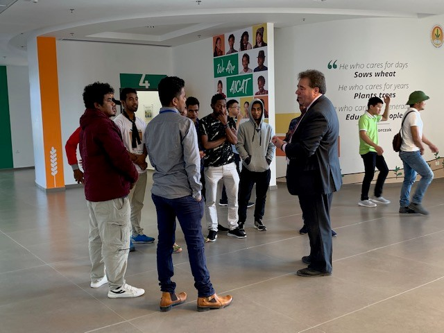
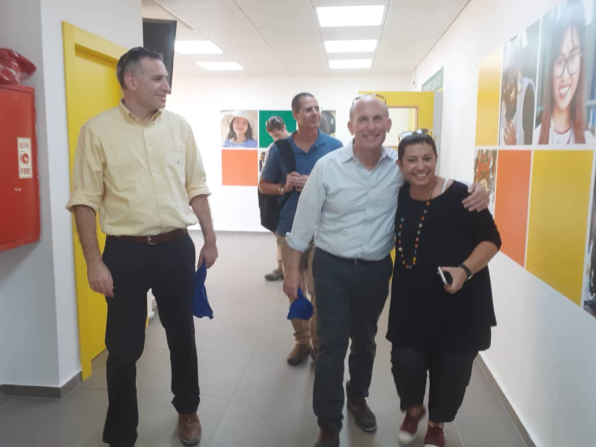
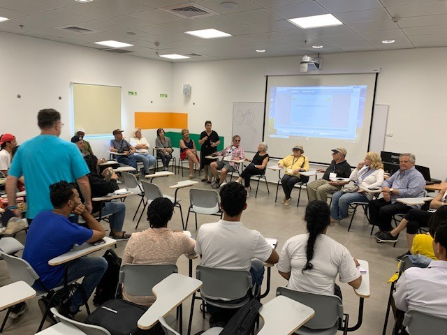
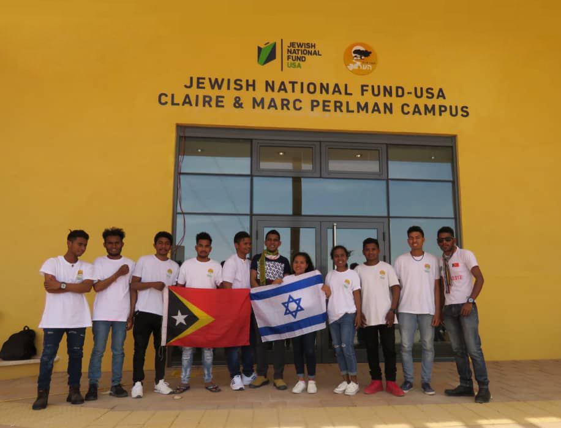
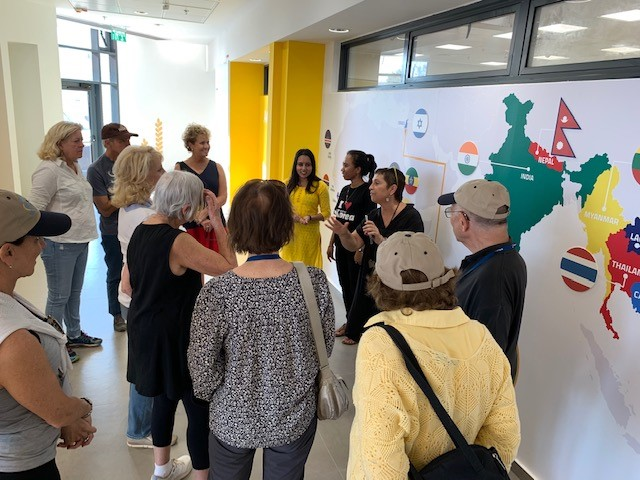
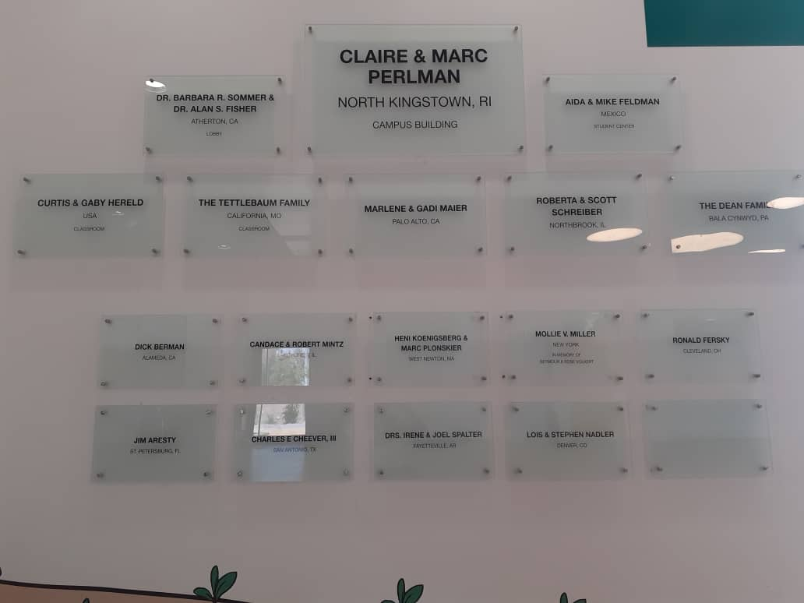

Kemitraan kami dengan berbagai organisasi internasional terkemuka memungkinkan AICAT terus berkembang dan memberikan dampak nyata bagi ribuan generasi petani masa depan dunia.
Dampak AICAT telah meningkat drastis selama satu dekade terakhir, berkat kerja sama dengan Pemerintah Israel dan kemitraan istimewa kami bersama Jewish National Fund – USA (JNF‑USA).
Bersama JNF‑USA yang dipimpin oleh para visioner sejati — Presiden Nasional Dr. Sol Lizerbram dan CEO Russell Robinson — kami berhasil membangun Kampus Claire & Mark Perlman yang berstandar internasional, serta meningkatkan fasilitas Pusat Mahasiswa Aida & Mike Feldman demi kenyamanan seluruh peserta didik kami.
Fasilitas-fasilitas ini memungkinkan AICAT menyediakan lingkungan belajar yang modern, nyaman, unik, dan inovatif bagi ribuan peserta yang mengikuti pelatihan setiap tahunnya. Masa belajar di kampus AICAT menginspirasi mereka untuk mendorong batas kemampuan diri, merobohkan setiap hambatan, dan menjadi pemimpin masa depan.
Kemitraan kami bersama JNF‑USA akan terus memperluas dampak AICAT dan menjangkau lebih banyak generasi muda — mereka yang akan menjadi ujung tombak ketahanan pangan global di negara masing-masing.
Para pemimpin ini menjadi pilar utama dalam mewujudkan visi AICAT sebagai pusat pelatihan pertanian bertaraf internasional.
Pemimpin visioner yang mendorong kolaborasi internasional antara JNF‑USA dan AICAT dalam membangun infrastruktur pertanian modern.
Eksekutif berpengalaman yang memimpin inisiatif pembangunan kampus bersama AICAT, menjamin standar fasilitas kelas dunia.
Wajah utama AICAT yang menjembatani misi lembaga dengan para mitra internasional, memastikan program berjalan berdampak dan berkelanjutan.
Dokumentasi kunjungan, sesi kelas, dan momen penting yang mencerminkan kuatnya hubungan AICAT dengan para mitranya.

Russell F. Robinson — CEO Jewish National Fund bertemu dengan peserta AICAT dari Timor Leste

Hanni Amon — Direktur Eksekutif AICAT bersama Mitch Rosenzweig, Arik Michaelson, dan Alon Bashi

Sekelompok tamu JNF mengikuti sesi kelas di kampus AICAT

Peserta dari Timor Leste di depan Kampus Claire & Marc Perlman yang baru

Hanni Amon menjelaskan tujuan dan impian AICAT kepada delegasi JNF

Papan nama donatur di pintu masuk kampus baru — warisan abadi kemitraan JNF dan AICAT
Hasil nyata dari kemitraan strategis yang mengubah wajah kampus AICAT menjadi pusat pelatihan berstandar internasional.
Gedung kampus berteknologi tinggi yang dibangun atas dukungan JNF‑USA. Dilengkapi ruang kelas modern, laboratorium pertanian, dan fasilitas lengkap untuk mendukung proses belajar mengajar bertaraf internasional.
Pusat kegiatan mahasiswa yang direnovasi dan ditingkatkan kualitasnya berkat kontribusi JNF‑USA. Menjadi ruang berkumpul, berkolaborasi, dan beristirahat bagi ribuan peserta pelatihan dari seluruh dunia setiap tahunnya.

Bergabunglah dengan program pelatihan internasional AICAT dan
pelajari teknologi pertanian
modern langsung dari para ahli.